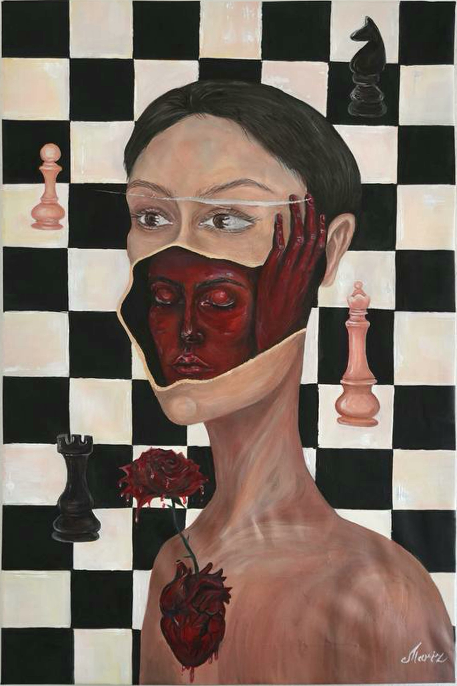
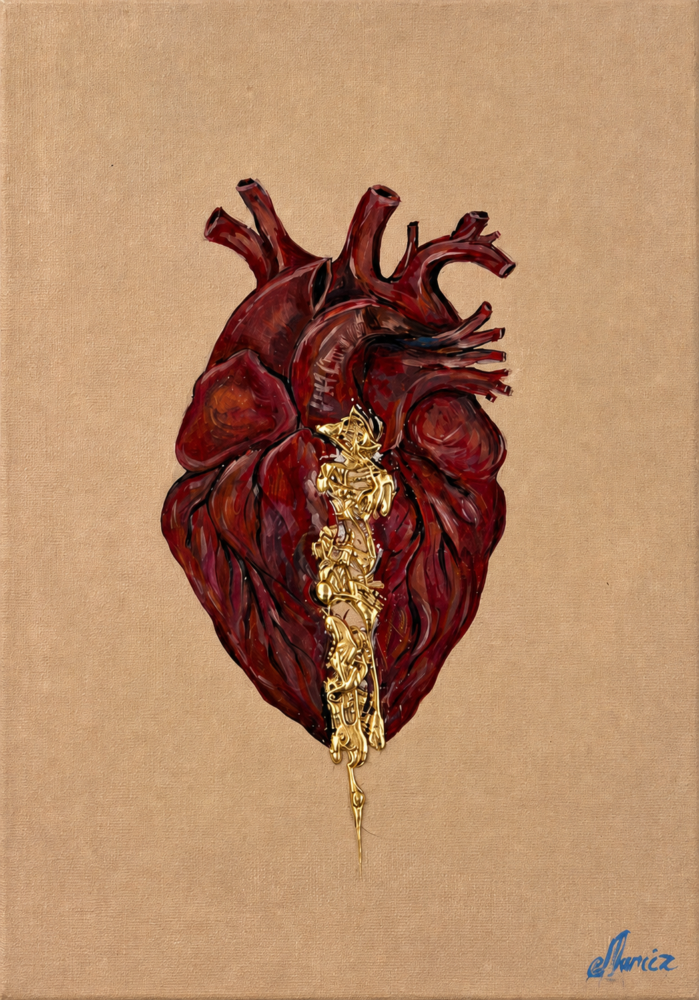
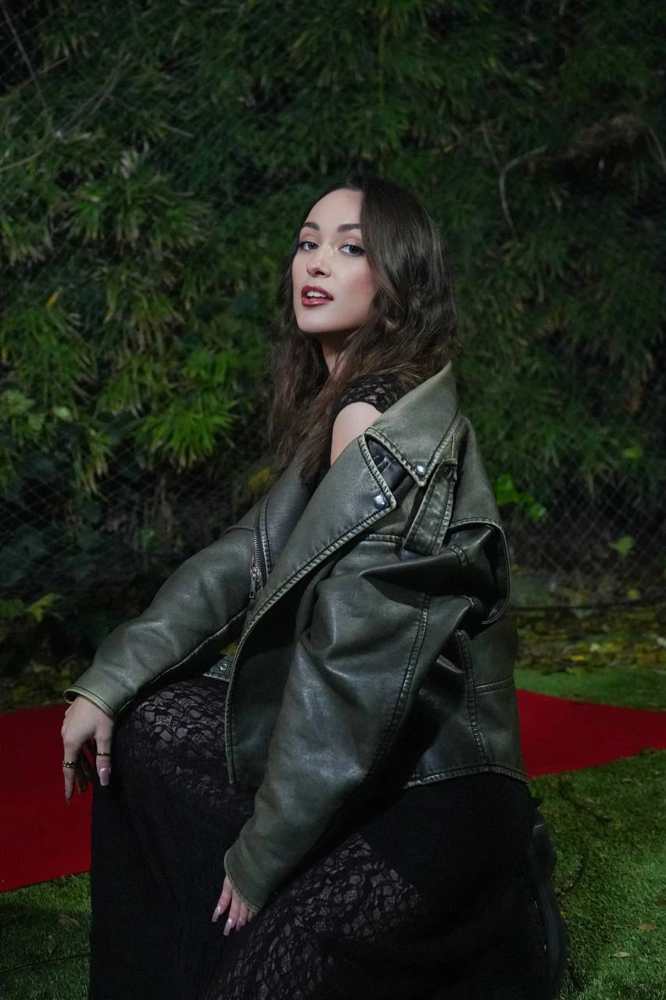

Ideas · Art · Inner worlds
The
Journal.
Thoughtful stories for people who believe art can change a room, preserve a memory and reveal what language cannot. Essays on contemporary painting, collecting and the transformation of pain into beauty.

Wall Art Size Guide: How to Choose the Right Scale
Measure the true display zone, compare single works and groups, and test an artwork's exact outline before buying.
Read the guide →
How Is Original Art Shipped?
Understand packing, insurance, customs and delivery, then inspect and document the work safely when it arrives.
Read the guide →
How to Light Artwork at Home Without Damaging It
Choose safe LED light, control glare and shadows, balance colour temperature and protect paintings and prints from cumulative exposure.
Read the guide →
Limited Edition Prints Explained
Read edition numbers, signatures and artist's proofs, compare print methods and know what to ask before collecting.
Read the guide →How to Buy Original Art Online Safely
Verify the artist and object, assess condition, understand the full cost, pay securely and plan insured delivery.
Read the guide →
How to Choose Art as a Gift
A thoughtful guide to originals and prints for weddings, anniversaries, housewarmings and personal milestones.
Read the guide →How to Frame a Canvas Painting
Compare unframed, traditional and floating presentations, decide on glass, measure correctly and choose safe hardware.
Read the guide →
Art Certificate of Authenticity: What Collectors Should Know
What a useful certificate includes, what it cannot prove and which records to preserve with an original or edition.
Read the guide →
How to Commission a Painting: A Collector's Guide
Choose the right artist, shape a useful brief and understand pricing, feedback, rights, documentation and delivery.
Read the guide →
How to Care for Original Art at Home
A practical guide to light, humidity, handling, cleaning, framing, storage and knowing when to call a conservator.
Read the guide →Original Art vs Prints: What Should You Buy?
A clear guide to uniqueness, editions, materials, authenticity and choosing the form that is right for your space and budget.
Read the guide →
How High to Hang Art: A Practical Guide
Eye-level placement, spacing above furniture, gallery walls and the measurements that help artwork feel at home.
Read the guide →
How Art Transforms Emotional Pain Into Meaning
Why making and living with art can give difficult experience a new form --- without pretending the wound never existed.
Read the essay →How to Choose Original Art for Your Home
A human guide to scale, emotion, authenticity and choosing a work you will still want to live with years from now.
Read the guide →Why Texture Matters in Contemporary Art
From scars and gold leaf to shadow and touch: how material surfaces create emotion that a flat image cannot reproduce.
Read the essay →